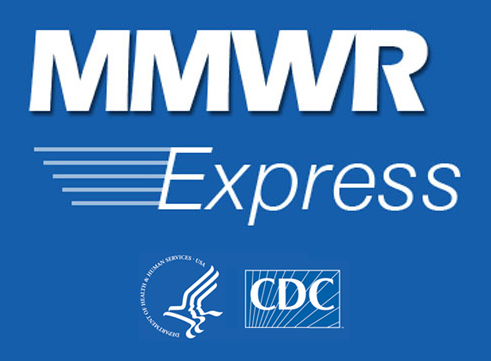

Version 0.4.9
Welcome to the MMWR Express mobile app — providing fast access to the blue summary boxes in MMWR's Weekly Report.
The Morbidity and Mortality Weekly Report (MMWR) series is prepared by the Centers for Disease Control and Prevention (CDC). Often called, “the voice of CDC,” the MMWR series is the agency’s primary vehicle for scientific publication of timely, reliable, authoritative, accurate, objective, and useful public health information and recommendations.
Summaries are searchable by specific MMWR article or by specific subject (e.g., salmonella).
This application is a result of a collaboration between CDC's MMWR staff and the Informatics Innovation Unit (IIU) within the Division of Public Health Information Dissemination (DPHID).
If you have any questions about the app, please contact either the MMWR staff at mmwrq@cdc.gov or the Informatics Innovation Unit staff at informaticslab@cdc.gov.